Contents
- Laboratório de Sistemas dinâmicos
- Exercicio 1 b)
- Ex. 1 b)
- Exercicio 1 c)
- Ex. 1 e)
- Ex. 1 f)
- Exercicio 1 i)
- Ex. 2 a)
- Exercicio 2 b)
- Exercicio 2 c)
- Exercicio 2 d)
- Exercicio 2 e)
- Exercicio 2 j)
- Exercicio 2 l)
- Exercicio 3 a)
- Exercicio 3 b)
- Exercicio 3 c)
- Exercicio 3 d)
- Exercicio 3 d)
- Exercicio 3 g)
- Exercicio 3 h)
- Exercicio 3 i)
- Exercicio 4
Laboratório de Sistemas dinâmicos
Prática 06 Data: 08/07/2024 Autores: Ana Clara Gomes & João Vitor Barbosa
%%Limpar Workspace clear all; close all; clc;
Script Prática 6
Exercicio 1 b)
Ex. 1 b)
s = tf('s'); RC = 100 * 0.000001; Vc_s = 1 / ((RC * s) + 1); step(Vc_s.num{1},Vc_s.den{1}); grid('on');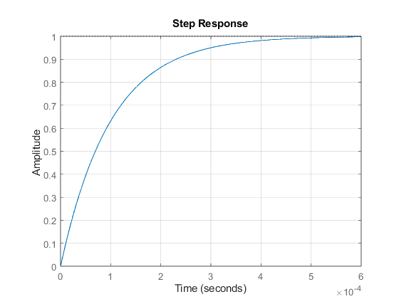
Exercicio 1 c)
s = tf('s'); RC = 200 * 0.000001; Vc_s = 1 / ((RC * s) + 1); step(Vc_s.num{1},Vc_s.den{1}); grid('on'); %Como visto nos gráficos 1.b e 1.c quando dobramos a resistência, temos %como resultaod uma constante de tempo amior que faz com que o nosso %sistema chegue em seu valor final mais rápido, além de dobrar a %frequência de corte do sistema %%Exercio 1d)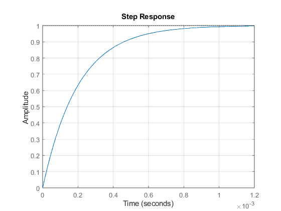
Ex. 1 e)
s = tf('s'); R = 1000; C = 0.000001 RC = R * C; I_s = (C * s) / ((RC * s) + 1); bode(I_s.num{1}, I_s.den{1}); grid('on');
C = 1.0000e-06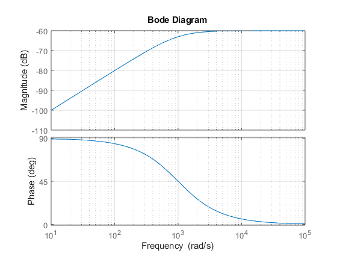
Ex. 1 f)
%A principal diferença é que a tensão no capacitor tende a se igualar a %tensão de alimentação, ou seja seu valor final tente a Ve(s), ja a %corrente no capacitor tende a 0, então a se carregar completamente o %capacitor se torna uma chave aberta, o que expla o comportamento %exponencialmente decrescente
Exercicio 1 i)
s = tf('s'); R = 1000; C = 0.000001 RC = R * C; I_s = (C * s) / ((RC * s) + 1); step(I_s.num{1}, I_s.den{1}); grid('on');
C = 1.0000e-06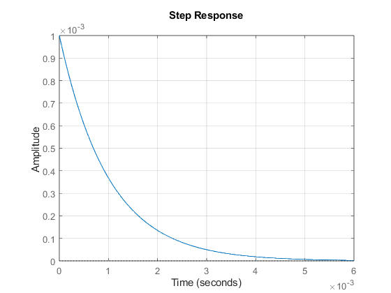
Ex. 2 a)
s = tf('s'); R = 1000; L = 0.000001 RL = R * L; I_s = (1 / R) / (((L / R) * s) + 1); bode(I_s.num{1},I_s.den{1}); grid('on');
L = 1.0000e-06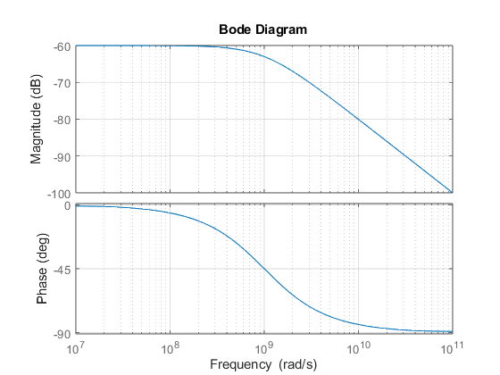
Exercicio 2 b)
s = tf('s'); R = 1000; L = 0.000001 RL = R * L; I_s = (1 / R) / (((L / R) * s) + 1); step(I_s.num{1},I_s.den{1}); grid('on');
L = 1.0000e-06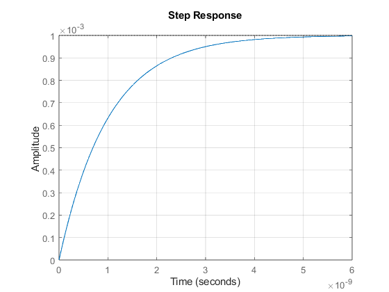
Exercicio 2 c)
R = 100;
L = 10^(-6);
G2s = tf([L 0],[L R]);
bode(G2s);grid('on');
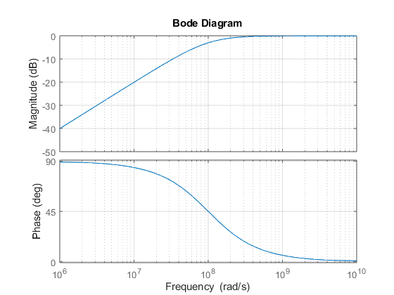 Exercicio 2 d)
R = 100;
L = 10^(-6);
G2s = tf([L 0],[L R]);
step(G2s);grid('on');
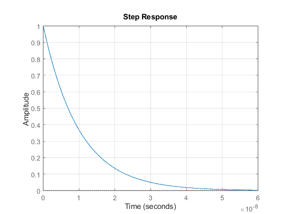 Exercicio 2 e)
%O componetamento é exatamente o contrário do Capacitor, auqi a tensão %tende a 0 com o passar do tempo, já a corrente tende a ser a corrente do %circuito com o tempo
Exercicio 2 j)
%Enquanto no caso 1 temos que a tensão final tende a Ve(s), no caso 2 a %tensão tende a 0, o que ocorre exatamente o contrário na corrente
Exercicio 2 l)
A=-R/L; B=1/L; C=[-R;R;1]; D=[1;0;0]; Gss2 = ss(A,B,C,D); figure(3); step(Gss2); xlabel('t'); ylabel('y'); grid on; %Como a tensão no indutor tende a 0, a tensão no resisto tende a Ve(s), o %que faz com que a corrente se estabilize em Ve(s)/R;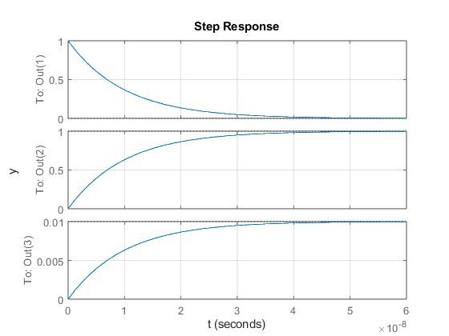
Exercicio 3 a)
R = 100;
C = 10.^-6;
L = 10.^-6;
G2s = tf([C 0],[L*C R*C 1]);
step(G2s*5);grid('on');
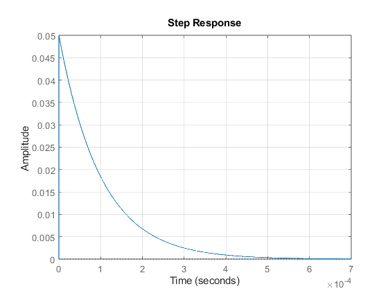 Exercicio 3 b)
R = 100; C = 10.^-6; L = 10.^-6; G2s = tf([C 0],[L*C R*C 1]); bode(G2s*5);grid('on'); %Como podemos perceber no diagrama de ganho, este é um circuito que permite %a passsagem de apenas uma faixa de frenqûencia;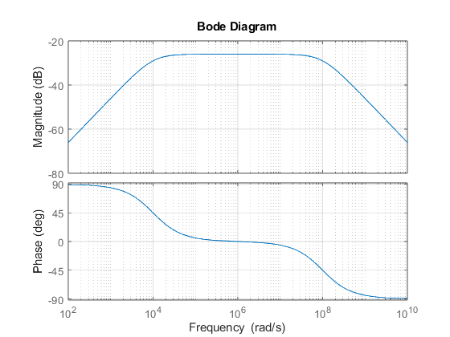
Exercicio 3 c)
R = 100;
C = 10.^-6;
L = 10.^-6;
G2s = tf([C 0],[L*C R*C 1]);
step(G2s*5);grid('on');
Exercicio 3 d)
R = 100;
C = 10.^-6;
L = 10.^-6;
G2s = tf([C 0],[L*C R*C 1]);
bode(G2s*5);grid('on');
Exercicio 3 d)
%Aqui praticamente não há diferencias entre tensão e corrente de saida, as %duas variáveis em questão tendem a se estabilizar em seu valor máximo %quando estão dentro da faixa de frequência aceita
Exercicio 3 g)
R = 200; C = 10.^-6; L = 10.^-6; G2s = tf(1,[L*C R*C 1]); bode(G2s*5);grid('on'); % que a frequência de corte superior dobrasse e a infderior caisse 2x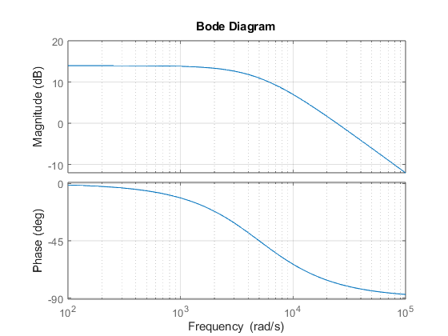
Exercicio 3 h)
%Está junto com letra i
Exercicio 3 i)
R = 100; C = 10.^-6; L = 10.^-6; A=[-R/L -1/L;1/C 0]; B=[1/L;0]; C=[0 1;-R -1;R 0;1 0]; D=[0;1;0;0]; Gss3 = ss(A,B,C,D); figure(3); step(Gss3); xlabel('t'); ylabel('y'); grid on;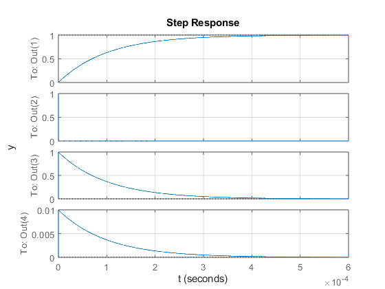
Exercicio 4
s = tf('s'); R1 = 100; R2 = 200; C = 10.^-6; L = 10.^-6; G1 = tf(1,[R1*C 1]); G4 = tf([L 0],[L R1]); G5 = tf(1,[L*C R1*C 1]); figure(4) bode(G1); title('Diagrama de Bode - G1(s)'); grid on; figure(2); bode(G4); title('Diagrama de Bode - G4(s)'); grid on; figure(3); bode(G5); title('Diagrama de Bode - G5(s)'); grid on;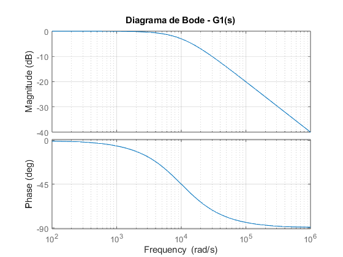 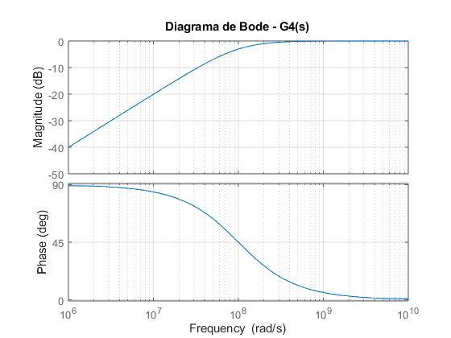 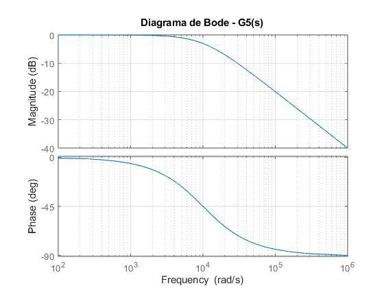